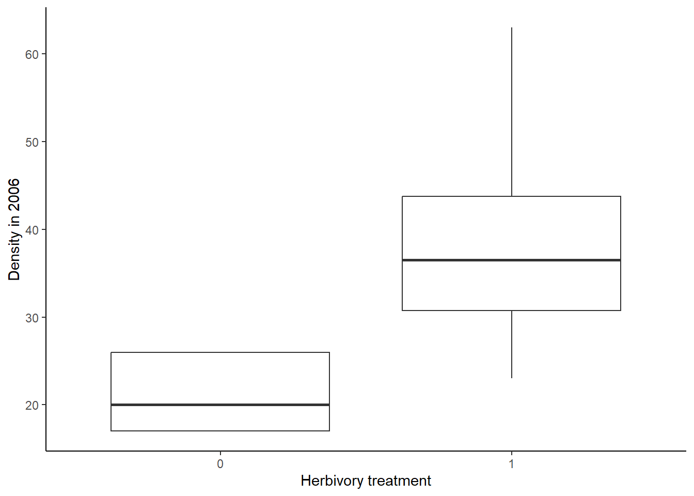
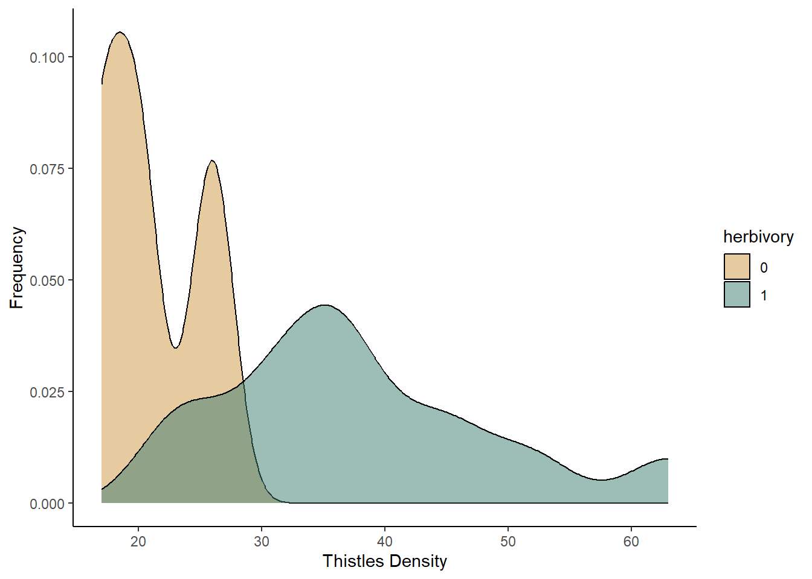

In this lesson, you will practice running your first formal statistical test, a t-test! You will use both a classical frequentist and a likelihood-based approach to run the test.
For this test, we will use the civu.csv data file. The civu data set contains data from an experiment designed to test the affects of native insect herbivory on a invasive bull thistles. We will use this data set to answer the following question: does insect herbivory affect the density of thistle plants?
Start off by reading in the civu data set that we have worked with
before. Be sure to first set your working directory to the folder with
the civu dataset. Then use the head function to view the
top rows of the data set, as a reminder of what data we have in the data
frame.
civu <- read.csv("civu.csv")
head(civu)## herbivory plant_id density_2006 density_2007 survival_t.1
## 1 0 15 20 3 0
## 2 0 7 26 5 0
## 3 0 16 17 1 0
## 4 0 22 26 5 0
## 5 0 23 26 5 0
## 6 0 12 20 3 0civu$herbivory <- as.factor(civu$herbivory)In this data set, the “herbivory” variable is our independent variable and the “density_2006” variable will be our dependent variable. Because the herbivory variable is categorical, we need to convert it to a factor variable, as we have done before:
civu$herbivory <- as.factor(civu$herbivory)Now we’re ready to get started on our analysis!
First, we are going to visualize the data. We will use two approaches: a standard boxplot and a density plot that shows the full distributions of our data.
We will use the ggplot2 package to make the graphs, so load that first:
library(ggplot2)We’ll begin with a boxplot. The syntax is similar to what you used to make histograms, with a few modifications. Here is the full code, will explanations of the modification below:
ggplot(data = civu, aes(x = herbivory, y = density_2006)) +
geom_boxplot() +
labs(x = "Herbivory treatment", y = "Density in 2006") +
theme_classic()
As will the histograms, we start with the ggplot function, where we tell R what data and variable we want to use in our graph. The data argument is where we input the name of our data frame, as before, and the variables in the aes function With a boxplot, we are graphing two variables (our independent and dependent variables) because we want to visualize the effect of one variable on another. Therefore, we need to include both an x and y variable in the aes function.
In the next row down, we tell R what type of graph we want to make. Here, we want to make a box plot, so we use the geom_boxplot function.
The other two lines are similar to the lines we used when we made histograms: they change the axis labels and some of the aesthetics of the graph.
Now we will make a density plot that compares the full distributions of thistle density for the two herbivory treatments. Again, the syntax will be similar, but I will walk through the differences below:
ggplot(data=civu, aes(x=density_2006,fill=herbivory))+
geom_density(aes(y=after_stat(density)),alpha=0.5)+
scale_fill_manual(values=c("#ce9642","#3b7c70"))+
labs(x="Thistles Density",y="Frequency")+
theme_classic()
In the first line, where we input the variables we want to graph, we do things a little differenly here. In this type of graph, instead of having our independent variable on the x-axis and our dependent variable on the y-axis, we are plotting the frequency of our thistle density variable, like we did for the histograms, but we will show two separate frequency distributions for our two herbivory treatments, and we will show those distribution in two different colors. Therefore, in our aes function, we use the density_2006 variable and our x variable, and then we include the fill argument to tell R that we want two different fill colors for our graph, based on the herbivory category. This will tell R both that we want two separate distributions and that we want them to be shown with two different fill colors.
In this next line down, we use the geom_density function that we have used before to tell R to make a probability density plot. The first argument (y=after_stat(density))) tells R to calculate the probability density of each thistle density, based on the frequency of the values in our data set. The second argument (alpha=0.5), adjusts the transparency of the colors in the graph. The alpha values can range from 0 to 1, with 0 being fully transparent and 1 being fully opaque.
The final line that is different is the addition of the “scale_fill_manual” function. This line is not required, but it allows you to choose the colors in your graph. If you do not include this line, R will use ggplot’s default color palette (be aware: the default color palette is not colorblind-friendly). The values I input in to the function are the hex codes for the colors I wanted to use. You can use either hex codes or the names of the colors. I like to use hex codes because they are more universal. Note that if you manually select your colors, you need to choose one color for each category. Here, we only have two categories: herbivory and no herbivory.
Playing around with colors in R can be fun! If you want to explore different color palettes, I included some information and resources in section 5.4 at the bottom of this lesson.
Now that we have visualized the data, let’s run the t-test itself. We
will set up the model using the t-test function: t.test.
The first argument for this function is the formula for our model, where
we tell R our independent and dependent variables. The dependent
variable goes on the left and the independent variable goes on the
right. The second argument is the name of the data set. Then then final
argument “var.equal = TRUE” tells R that we are assuming our two
treatments have equal variance.
civu_ttest <- t.test(density_2006 ~ herbivory, data = civu, var.equal = TRUE)To view the output, just type the name you gave to your t-test object:
civu_ttest##
## Two Sample t-test
##
## data: density_2006 by herbivory
## t = -8.2506, df = 148, p-value = 7.941e-14
## alternative hypothesis: true difference in means between group 0 and group 1 is not equal to 0
## 95 percent confidence interval:
## -21.07172 -12.92828
## sample estimates:
## mean in group 0 mean in group 1
## 21 38You should see the following pieces in your output:
Based on this output, would you reject the null hypothesis and tentatively accept the alternative hypothesis?
Next we will use a likelihood-based approach to test the same question. For this, we will start by building our two linear models, just as we did in the Model Building lesson:
civu_null <- lm(density_2006 ~ 1, civu)
civu_alt <- lm(density_2006 ~ herbivory, civu)Now, we just need to calculate the Akaike’s Information Criterion
(AIC) values for the two models. We can do this using the
AIC function. As the arguments, we just need to list the
models we want to compare. We can compare more than two models at once,
but for this question, we just have our null model and one alternative
model.
AIC(civu_null, civu_alt)## df AIC
## civu_null 2 1178.015
## civu_alt 3 1123.255You should see the output automatically appear in a table. The first column lists the model. The second column (df) lists the number of parameters in each model (remember, AIC penalizes for adding parameters). The final column lists the AIC values for each model. The lower the AIC value, the better the model. A difference of 2 or more between the AIC values indicates that one model is significantly better than the other.
Based on this output, which is the better model? Is it significantly better?
Does your conclusion from this approach match your conclusion from the classical frequentist approach?
When we made our density plot, we included the
scale_fill_manual function to specify the colors we wanted
to use in the graph. You are not required to include this function. If
you leave it out, ggplot will automatically choose colors based on its
default color package. However, the ggplot’s default color palette is
not colorblind-friendly, so it is usually better to choose a different
color palette. Below are some links to websites that can help you choose
colors. When you list the colors you want to use, you can list the hex
codes (as we do in our code in this lesson) or the name of the color
(e.g., “blue”). If you use the scale_fill_manual function,
or a similar function, to specify colors, be sure to include one color
for every group in your variable. In our example, the variable displayed
by the colors only had two groups (herbivory and no herbivory). If you
have a variable with more than two groups, you need to list more than
two colors.
List of useful R color websites:
ggplot 2 Quick reference: colors. This website includes a chart will color names in R, along with additional information about using color in ggplot.
ColorBrewer. The ColorBrewer website provides a set of color palettes that you can use in R. You can choose sequential, diverging, or qualitative palettes, and there is an option for colorblind-friendly palettes. The website will provide the hex codes for the colors in the palette.
MetBrewer. MetBrewer, which also has an associated R package, provides a set of color palettes based on works of art at the Metropolitan Museum of Art. Not all of the palettes are colorblind-friendly, but you can find a list of colorblind-friendly palettes at the bottom of the webpage.
Introduction to the viridis color maps. Viridis is an R package that has colorblind-friendly palettes. This website provides information on the use of the package. You can also see what some different R color palettes would look like to people with different forms of colorblindness.
Best Color Palettes for Scientific Figures and Data Visualizations This website has some general guidelines for the use of color in scientific publishing, along with some specific colorblind-friendly palettes, including the hex codes.
PNW colors. This R package has a set of colorblind friendly palettes based on photographs of the Pacific Northwest.